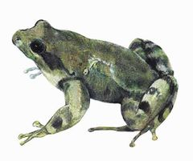
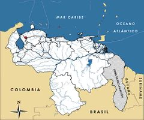

Leptodactylus magistris
| Sapito silbador del Cerro Socopo | |
|---|---|
|  | |
| Riesgo de extinción | |
 En peligro (UICN) | |
| Clasificación científica | |
| Reino: | Animalia |
| Filo: | Chordata |
| Clase: | Amphibia |
| Orden: | Anura |
| Familia: | Leptodactylidae |
| Género: | Leptodactylus |
| Especie: | Leptodactylus magistris |
| Nombre binomial | |
|
Leptodactylus magistris Mijares-Urrutia, 1997 | |
| Distribución | |
|
 Mapa de distribución de Leptodactylus magistris | |
Contenido
Información de Evaluación
- Categoría y Criterio Regional: En Peligro Crítico B1ab(iii)+2ab(iii)
- Fecha de Evaluación Regional: 2015
- Evaluadores: Jesús Morales-Campos y Ariany García-Rawlins
- Categoría y Criterio Global: En Peligro Crítico B1ab(iii)+2ab(iii)
Justificación
Evaluaciones Previas
1999: No evaluado (NE)
2008: En Peligro (EN)
Información General
Nombres comunes
Sapito silbador del Cerro Socopo, rana de los maestros, teachers' frog, Socopo robber-frog.
Notas taxonómicas
Sinónimos
Descripción
Pequeño anfibio de aspecto robusto. Se caracteriza por la cabeza ancha en forma de cuña. Su hocico es redondeado y puntiagudo. Tiene ojos grandes laterales y tímpano redondo, transparente. Su piel dorsal es lisa y presenta flancos granulosos. Las patas son largas, musculosas. El dorso es pardo con manchas irregulares. Posee un vientre blancuzco de textura lisa, excepto en la superficie inferior de los muslos. Leptodactylus magistris es de hábitos terrestres y diurnos que vive en pequeñas quebradas bordeadas por arbustos y herbazales, en áreas intervenidas que originalmente fueron una selva nublada (Mijares-Urrutia 1997).
Distribución
Es una especie endémica del noroeste de Venezuela, conocida solamente del Cerro Socopo (a 1250 m de elevación), a 30 km por carretera al suroeste de la población de Guajiro, municipio Mauroa, estado Falcón. Se ha sugerido que podría habitar otros bosques cercanos como Cerro Azul (1880 m) y Cerro Cerrón (2080 m), los cuales junto con Cerro Socopo, forman parte de la serranía de Siruma y están conectados por valles medianamente altos, lo que sugiere una relativa continuidad climática y ecológica, por lo que su hábitat podría ser mayor al reportado. La serranía de Siruma (también se le conoce con los nombres de Sierra de Jirajara o El Empalado) presenta una situación geográfica privilegiada, con bosques nublados aislados, que la convierten en un lugar de gran interés biogeográfico. Aunque la herpetofauna del lugar ha sido escasamente estudiada, cuenta con varias especies únicas y aparentemente endémicas, entre las que destacan la también amenazada rana arborícola Dendropsophus amicorum (Mijares-Urrutia 1997).
- Sistema: Terrestre, Dulceacuícola
- Bioregión:
- Intervalo altitudinal (m): 1250-2080
- Endémica: Sí
Situación
Se desconoce el estatus poblacional de esta especie, y solo se cuenta con los dos ejemplares que corresponden a su descripción original (Mijares-Urrutia 1997). En 2003, con el fin de ubicarla, se realizó una evaluación que resultó negativa, aunque únicamente se exploraron áreas por debajo de la altitud en la que se ha registrado. A pesar de la falta de información, se presume que ha experimentado una disminución de sus poblaciones debido a las alteraciones sufridas en su hábitat, cuya distribución potencial es menor a los 100 km2 siendo su área de ocupación de menos de 10 km2. En el ámbito internacional, tanto en la Evaluación Global de los Anfibios, como en la lista roja de la Unión Internacional para la Conservación de la Naturaleza está inscrita en la categoría En Peligro Crítico (IUCN et al. 2006, IUCN 2014). Al igual que otras especies endémicas de Cerro Socopo, se requieren estudios taxonómicos a nivel genético-molecular para establecer las relaciones de parentesco con otras especies de distintas regiones del noroccidente de Venezuela. En este sentido, la taxonomía aportará datos valiosos para la interpretación biogeográfica de estos lugares poco explorados desde el punto de vista biológico.
- EOO (km2): <100
- AOO (km2): <10
- Tendencia Poblacional: Decreciendo
Amenazas
Entre las posibles amenazas que estarían incidiendo en la disminución de sus poblaciones, la principal es la destrucción de los bosques nublados. La localidad tipo de la especie, Cerro Socopo, ha estado desde hace muchos años sometida a una acelerada destrucción de sus ambientes boscosos por obras agrícolas e incendios. La cobertura vegetal de la selva nublada en las posiciones topográficas más elevadas ha sido drásticamente reducida. Esta situación se ve agravada por su distribución restringida (Mijares-Urrutia 1997, IUCN et al. 2006, IUCN 2014).
Conservación
No se ha tomado medida alguna para la conservación del Leptodactylus magistris. Con base en el alto grado de endemismo evidenciado por la fauna de anfibios del Cerro Socopo, reflejado en las especies Mannophryne lamarcai, Dendropsophus amicorum y Leptodactylus magistris, se ha sugerido la protección de esta montaña. En tal sentido, se recomienda que se otorgue a toda la unidad geográfica un estatus legal que la ampare en la figura de Área Bajo Régimen de Administración Especial (Abrae), la cual funcione para salvaguardar su biodiversidad única, en especial en los últimos relictos de bosques que aún permanecen en la serranía de Siruma, donde se encuentra ubicado el Cerro Socopo (Mijares-Urrutia 1997). Igualmente, se sugiere implementar un programa de monitorización de las especies de anfibios amenazados del cerro y precisar las condiciones de sus ambientes (IUCN et al. 2006, IUCN 2014).
Autorías
Autores originales
Enrique La Marca, Abraham Mijares-Urrutia y Josefa Celsa Señaris
Colaboradores
Ilustrador
Ximenamaria Rausseo
Referencias
- IUCN (2014). The IUCN Red List of Threatened Species. Version 2014.3. Accesible en www.iucnredlist.org.
- IUCN, Conservation International y NatureServe (2006). Global Amphibian Assessment.
- La Marca, E., Mijares-Urrutia, A. y Señaris, J. C. (2015). Sapito silbador del Cerro Socopo, Leptodactylus magistris. En: J.P. Rodríguez, A. García-Rawlins y F. Rojas-Suárez (eds.) Libro Rojo de la Fauna Venezolana. Cuarta edición. Provita y Fundación Empresas Polar, Caracas, Venezuela. Recuperado de: animalesamenazados.provita.org.ve/content/sapito-silbador-del-cerro-socopo
- Mijares-Urrutia, A. (1997). Un nuevo Leptodactylus (Anura, Leptodactylidae) de un bosque nublado del Oeste de Venezuela. Alytes 15(3): 113-120.
- Rodríguez, J. P. y Rojas-Suárez, F. (1999). Libro Rojo de la Fauna Venezolana, segunda edición. PROVITA, Fundación Polar. Caracas. 444 pp.
- Rodríguez, J. P. y Rojas-Suárez, F. (Eds.) (2008). Libro Rojo de la Fauna Venezolana, tercera edición. Provita y Shell Venezuela, S. A. Caracas, Venezuela. 364 pp.